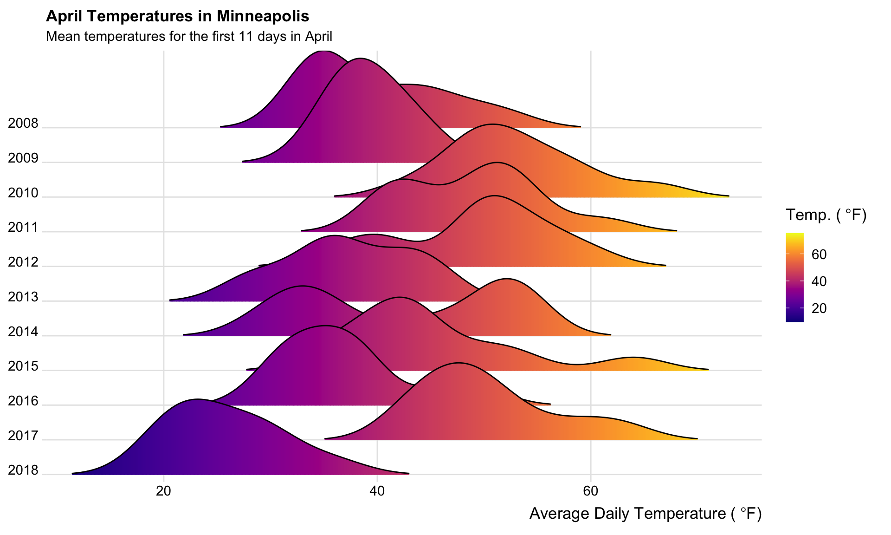

library(dplyr)
library(forcats)
library(ggplot2)
library(ggridges)
library(readr)
library(viridis)
# Read in data
april = read_csv("https://raw.githubusercontent.com/zief0002/Public-Stuff/master/data/april-weather.csv")
# Filter dates
april = april %>%
filter(date <= 11)./assets/body-header.qmd
It feels like this spring has been especially terrible weather-wise. We have gotten a lot of snow and it has been cold. To evaluate whether this is the case or whether I have hindsight bias, I pulled some historical weather data for the month of April from Weather Underground.
I grabbed data back to 2008 (available at https://raw.githubusercontent.com/zief0002/Public-Stuff/master/data/april-weather.csv). To be fair about the comparisons I was making, I filtered the data so that I only had the first eleven days of April for each year represented in the data. (April is a month in Minnesota that has a lot of variation from the first to last day of the month.) I then counted the number of those days each year that it snowed, as well as, the number of days over 40℉, 50℉, and 60℉.
april %>%
group_by(year) %>%
summarize(
days_with_snow = length(grep(pattern = "Snow", x = events)),
days_over_40 = sum(temp_high > 40),
days_over_50 = sum(temp_high > 50),
days_over_60 = sum(temp_high > 60)
)# A tibble: 11 × 5
year days_with_snow days_over_40 days_over_50 days_over_60
<dbl> <int> <int> <int> <int>
1 2008 4 7 3 2
2 2009 3 10 4 0
3 2010 0 11 11 7
4 2011 2 11 9 4
5 2012 0 11 9 6
6 2013 4 7 2 0
7 2014 3 8 6 4
8 2015 2 11 6 3
9 2016 3 8 2 1
10 2017 2 11 11 4
11 2018 5 1 0 0This suggested that my snow hypothesis (we have had more snow this year) may be erroneous. But, we have had a couple large snows; maybe we had more snow on the days we actually had snow. To evaluate this, I computed the total amount of precipitation for the years it actually snowed during the first eleven days of April.
# Get the case numbers for the days that "Snow" is in the event column
snow_days = grep(pattern = "Snow", x = april$events)
# Compute the total amount of precipitation on the days with snow
april %>%
filter(row_number() %in% snow_days) %>%
group_by(year) %>%
summarize(
total_snow = sum(precip, na.rm = TRUE)
)# A tibble: 9 × 2
year total_snow
<dbl> <dbl>
1 2008 0.96
2 2009 0.47
3 2011 0.08
4 2013 1.39
5 2014 0.81
6 2015 0.71
7 2016 0.06
8 2017 0.18
9 2018 0.82While more snow than the last couple years, 2018 doesn’t stand out as a banner April for the amount of snow. We will attribute this erroneous hypothesis to snow-blindness.
However, my “April = 🌡” hypothesis seems spot on. In 2018, so far, we have only had one day where the daily high temperatur was over 40℉. In the 10 years previous, almost all of the first eleven days of April hit over 40℉. This is compounded by the fact that the one day it went over 40℉, the temperature rose to a balmy 41℉!
Lastly, I looked at the distribution of the average daily temperatures since 2008. This was inspired by a post I saw here and here.
# Ridge plot of the distribution of average daily temperatures by year
ggplot(april, aes(x = temp_avg, y = fct_rev(factor(year)), fill = ..x..)) +
geom_density_ridges_gradient(scale = 3, rel_min_height = 0.01, gradient_lwd = 1.) +
scale_x_continuous(expand = c(0.01, 0)) +
scale_y_discrete(expand = c(0.01, 0)) +
scale_fill_viridis(
name = expression(paste('Temp. (',~degree,'F)',sep='')),
option = "C"
) +
labs(
title = 'April Temperatures in Minneapolis',
subtitle = 'Mean temperatures for the first 11 days in April',
x = expression(paste('Average Daily Temperature (',~degree,'F)',sep=''))
) +
theme_ridges(
font_size = 13,
grid = TRUE
) +
theme(
axis.title.y = element_blank()
)Warning: The dot-dot notation (`..x..`) was deprecated in ggplot2 3.4.0.
ℹ Please use `after_stat(x)` instead.
This also suggests that we are experiencing a less than tropical April in Minneapolis.